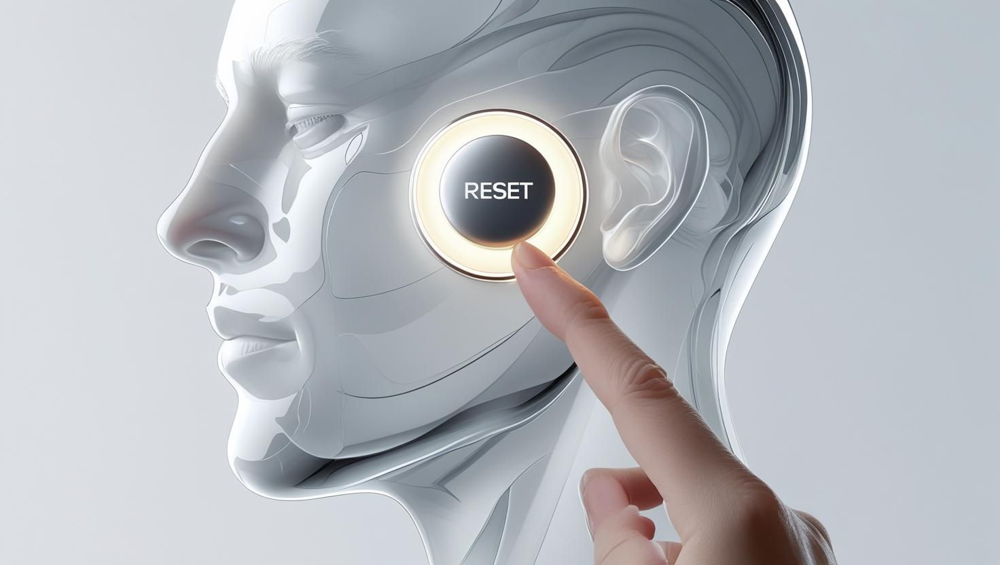
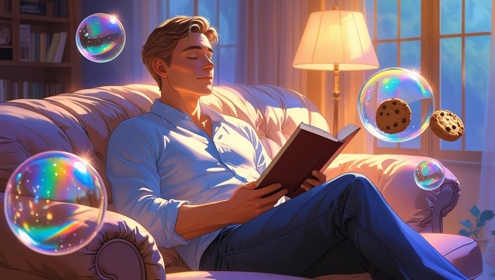
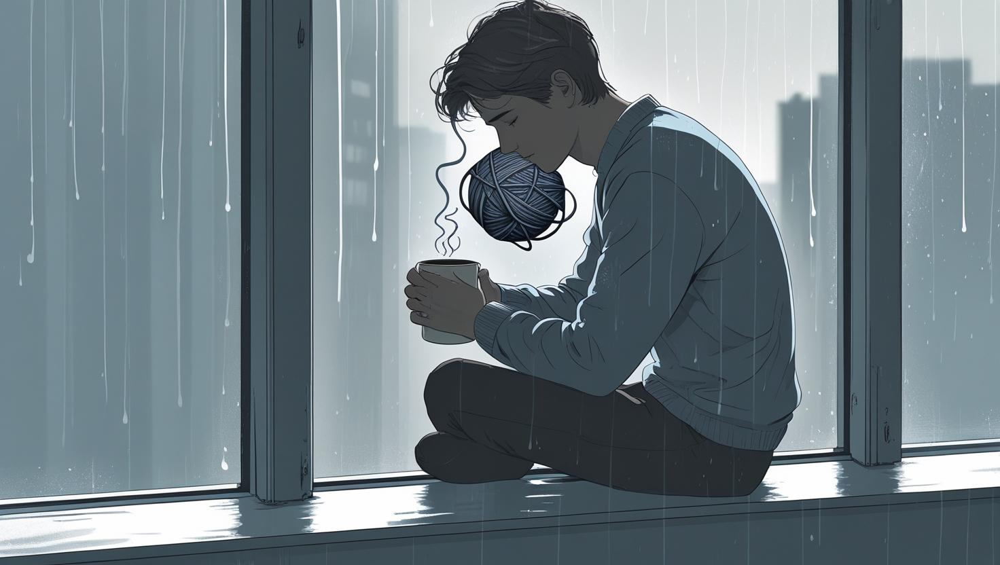

Poate ai observat și tu că ai devenit dependent de "efectul de palmă" – acea lovitură bruscă de stimulare de care simți că ai nevoie doar ca să simți ceva. Cafeaua aceea tare de dimineață poate funcționa ca o palmă care să te pună în mișcare pentru încă o zi. Energia blândă de la un ceai verde parcă nu mai este de ajuns, iar o gogoașă plină de zahăr pare mult mai atrăgătoare decât energia lentă pe care ți-ar oferi-o un bol cu ovăz.
Nu ești singurul care trece prin asta. Mulți simt cum imaginile intense și stimularea rapidă au înlocuit bucuria unei conexiuni reale. Creierul tău, odată obișnuit cu o plăcere naturală, care se construiește treptat, acum tânjește după intensitate instantanee. Astfel, ajungi să preferi șocul în detrimentul constanței și lovitura în detrimentul unui obicei sănătos. Probabil observi asta în felul în care mănânci, muncești și te simți.
Dacă te întrebi de ce se întâmplă asta, răspunsul se află în dopamină. Înțelegerea acestui proces este primul pas spre schimbare. De aceea, am pregătit un plan prietenos cu opt pași, care te poate ajuta să-ți echilibrezi nivelul de dopamină. Vei vedea că acești pași pot face o diferență reală și te pot elibera de tiparele care îți sabotează progresul.
Este important să știi că dopamina nu este inamicul; de fapt, ai nevoie de ea. Este combustibilul pentru motivația ta, te ajută să acționezi și să simți că progresezi. Problema apare în lumea modernă, unde dopamina ta este constant suprastimulată din surse greșite: rețele sociale, seriale, zahăr, jocuri. Această suprastimulare creează o buclă: ceva te declanșează (stres, plictiseală), iar creierul tău eliberează dopamină în anticiparea recompensei. Asta te face să cauți comportamentul (prăjitura, telefonul etc.). Creierul tău învață că "asta se simte bine" și îți cere să repeți experiența. Cu timpul, însă, devine mai puțin sensibil și ajungi să ai nevoie de mai multă stimulare doar ca să te simți normal. Dependența nu este despre un caracter slab, ci despre un creier copleșit.
Iată cum poți începe să schimbi asta, pas cu pas:
Pasul 1: Alege-ți calea
Fii sincer cu tine. Pentru comportamentele care simți că au pus stăpânire, moderația s-ar putea să nu funcționeze. Gândește-te ce crezi că ar funcționa mai bine pentru tine. Orice ai alege, este esențial să ai o structură, un scop clar și alternative sănătoase la îndemână.
Pasul 2: Începe cu un singur pas
Nu încerca să repari totul deodată, ca să nu te simți copleșit. Poți începe cu un singur comportament. Succesul cu o schimbare mică îți va da încrederea și avântul necesar pentru provocări mai mari.
Pasul 3: Încearcă o "resetare"
Ce-ar fi să încerci o pauză completă de la acel comportament pentru 24 până la 72 de ore? Gândește-te la asta ca la o repornire a sistemului tău. Primele ore pot fi inconfortabile, dar de aici poate începe adevărata schimbare.
Pasul 4: Înlocuiește, nu elimina
Naturii nu-i place vidul. Dacă doar elimini un obicei, poftele se pot întoarce. Așa că, în loc să stai pe telefon, ai putea lua o carte. Cheia este să găsești un înlocuitor care să se simtă în continuare ca o recompensă.
Pasul 5: Construiește o fundație
Acum e timpul să ai grijă de sistemul tău nervos. Asigură-te că ieși la soare zilnic, mișcă-ți corpul și ai grijă să dormi bine și constant; somnul este esențial pentru repararea receptorilor de dopamină.
Pasul 6: Elimină ispitele
Un pas inteligent este să elimini declanșatorii din mediul tău. Nu te baza doar pe voință. Fă-ți viața mai ușoară: șterge aplicațiile care îți mănâncă timpul sau încarcă-ți telefonul în altă cameră.
Pasul 7: Folosește vizualizarea
Imaginează-ți versiunea ta care este deja liberă de acest obicei. Cum s-ar simți diminețile tale? Poți să-ți spui: "Sunt o persoană care alege energia reală, nu stări de euforie false". Repetarea te va ajuta enorm.
Pasul 8: Împrietenește-te cu plictiseala
Acest pas poate părea surprinzător, dar este esențial. Plictiseala nu este un inamic, ci o poartă către vindecare. În aceste momente de liniște, creierul tău se vindecă și se resetează. Oferă-i șansa să-și amintească din nou cât de bine se simte viața reală.